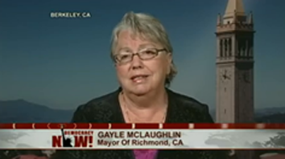
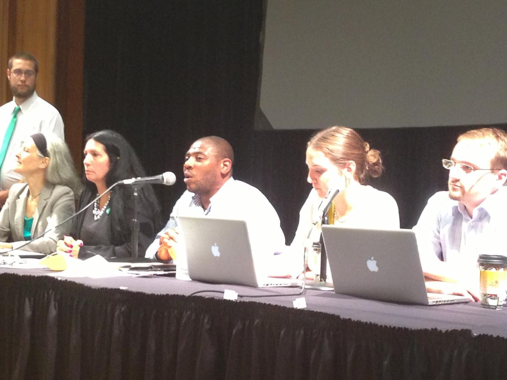

2013 - A Green year in Review
Top Ten Green Party of California (GPCA) Highlights of 2013
1) Record number of elected Greens in odd-numbered year
Twenty California Greens were elected to local office in 2013, an all-time high for the party in an odd-numbered year, when there are fewer elections. All 11 Green incumbents were re-elected and the year ended with 55 California Greens currently holding elected office.
2) Green Mayor Gayle Mclaughlin
Green Mayor of Richmond Gayle Mclaughlin made national news with her progressive policy efforts fighting local foreclosures and confronting corporate polluter Chevron. Her work was featured in Democracy Now, the Nation, Non-Profit Quarterly, and Occupy.com.
3) Fairfax Green majority continues
Greens have had at least a 3/5 majority on the five-member Fairfax Town Council since 2009, with 4/5 in 2012, with Larry Bragman, Pam Hartwell-Herrero, Ryan O'Neal and John Reed.
In 2013, both Hartwell-Herrero and O'Neal moved out of Fairfax and had to vacate their seats. Renée Goddard was appointed by the Town Council in April to replace O'Neal. In November, both she and Reed were re-elected, retaining the Green majority there.
4) Greens part of tri-party cooperation to amend the state's Elections Code with the Libertarian Party and the Peace and Freedom Party
In response to the negative affects of the Top Two primary system on California's smaller ballot status parties, the Green Party is working with the Libertarian Party and the Peace and Freedom Party to support legislation to amend the state's election code, in order to compensate for the worst of these affects on the party's ability to retain ballot status. The three parties have met in person and via teleconference, and approved a common analysis of the problems the Top Two system presents for them, a common set of reforms they favor, and are in negotiations with the State Legislature and the Secretary of State's office, offering feedback like this on the negotiations.

5) Court challenges to Proposition 14 and the Top Two primary system continue
A direct challenge to Proposition 14 - Rubin v Bowen, RG11-6053014, was filed on November 21, 2011 by the Green Party of Alameda County, the Libertarian and the Peace and Freedom Parties of California, and a number of individuals, including California Greens Michael Rubin and Kate Tanaka.
A copy of the original complaint is here and an amended version on February 14th here. On June 7, 2013 the judge issued a tentative ruling on whether a trial is needed, but then ruled against it on September 5th. A copy of that decision is here. On November 26, parties filed an appeal. The case is in state court and now goes to the State Court of Appeals, where it is case number A140387.
6) California Greens play active role at Green Party of the United States annual meeting
7) San Onofre Nuclear Power Plant Closed Permanently

What was once thought impossible - the shutting down of the San Onofre Nuclear Power plant in southern Orange County - became reality on June 6th.
The GPCA was one of two poltical parties in California to have called for the immediate closure and decommissioning of the state's nuclear power plants at Diablo Canyon and San Onofre (along with the Peace and Freedom Party.) Orange County Green Ace Hoffman has been one of the key activists in this long-term effort, and tells his story of "How David Slew Goliath (i.e. How the Activists Shut Down San Onofre.")
8) Stein for President campaign school, Eco-Socialist conference came to LA

To continue momentum and organizing, the Jill Stein for President campaign co-organized a series of campaign schools with state Green Parties after the November 2012 presidential election. On April 6 the campaign school came to Santa Monica College, and helped inspire the decision to run in November by Sean Reagan, who was elected to the Norwalk-La Mirada Unified School District Board of Trustees, the first Green elected in central Los Angeles County.
In September, a well-attended Eco-Socialist conference was held at the Mayme Clayton Library and Museum in Culver City. Many Greens were speakers including Stein, her campaign manager Ben Manski, congressional candidate Michael Powelson (San Fernando Valley), CSUN organizer Edy Alvarez and former Santa Monica Mayor and Councilmember Mike Feinstein.
9) Greens in the news: Medea Benjamin v. President Obama

On May 22, former California Green U.S. Senate candidate Medea Benjamin interrupted President Obama during his major address on counterterrorism to challenge him on closing the Guantanamo Bay prison and the use of drones. She explains why here. Benjamin has done extensive peace work with Global Exchange and Code Pink. In 2000 as a Green candidate for U.S. Senate, she received 328,826 votes and 3.1% of the vote.
10) GPCA endorses for 2014 statewide office
 In response to the passage in June 2010 of Proposition 14 and the Top Two primary system, which eliminated party primaries, for the first time ever, the GPCA has made endorsements in the primary election. The party endorsed candidates Luis Rodriguez, Governor; Laura Wells, Controller; Ellen Brown, Treasurer; and David Curtis, Secretary of State. Endorsements were made via the party's Standing General Assembly, which has delegates from active county parties throughout the state.
In response to the passage in June 2010 of Proposition 14 and the Top Two primary system, which eliminated party primaries, for the first time ever, the GPCA has made endorsements in the primary election. The party endorsed candidates Luis Rodriguez, Governor; Laura Wells, Controller; Ellen Brown, Treasurer; and David Curtis, Secretary of State. Endorsements were made via the party's Standing General Assembly, which has delegates from active county parties throughout the state.
Owing to a change in state law as part of the implementation of the Top Two system, the number of signatures a Green candidate needs to be on the statewide ballot without paying a filing fee went up from 150 to 10,000. The party begins 2014 with the challenge of gaining these signatures in order to ensure a Green presence on the June 2014 ballot.

We welcome all Californians who share the Green vision.
Join us in creating a new politics.
GREEN PARTY OF CALIFORNIA
PO Box 485
San Francisco, CA 94104
(916) 448-3437